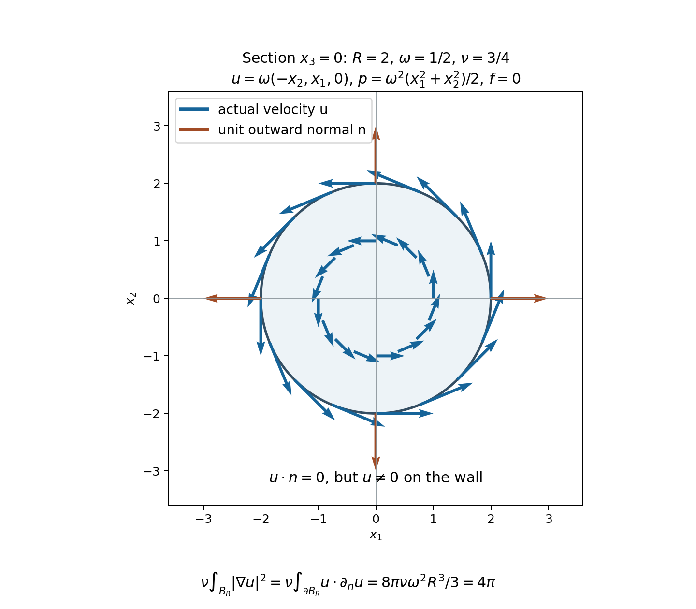

Velocity bounds and uniqueness
An energy weak solution has a velocity in \(L^2\), but its derivatives need not remain bounded. The preceding chapter constructed a unique \(H^1\) strong solution until its \(H^1\) norm becomes infinite. We now connect these two constructions. First we prove that any energy weak solution agrees with that strong solution while the latter exists. Then a bound on the velocity itself will prevent the strong solution from ending. This gives regularity and uniqueness for energy weak solutions satisfying the specified velocity bound.
The proofs retain the original positive viscosity, full force and periodic constant modes. They also explain precisely why the exponent relation \(2/p+3/q=1\) appears.
1. Domains, forces and the statements
Let \(\nu>0\) and let \(\Omega\) be either \(\mathbb R^3\) or
\[ Q=\prod_{j=1}^3(\mathbb R/L_j\mathbb Z),\qquad L_j>0,\qquad V=L_1L_2L_3. \tag{1.1} \]All spatial integrals use ordinary Lebesgue measure. Sobolev norms, the Leray projection \(P\), the heat operator \(S_\nu\), and the Fourier factors \(2\pi\xi\) and \(2\pi(k_j/L_j)_j\) are exactly those in Strong solutions and continuation. In particular
\[ \|h\|_{H^1}^2=\|h\|_2^2+\|\nabla h\|_2^2,\qquad \|h\|_{H^2}^2=\|h\|_{H^1}^2+\|\nabla h\|_{H^1}^2. \tag{1.2} \]The constants already proved there are
\[ C_\Omega= \begin{cases} S=4/\sqrt3,&\Omega=\mathbb R^3,\\ (4/\sqrt3)\sqrt{27}\sqrt{1+\sum_jL_j^{-2}},&\Omega=Q. \end{cases} \tag{1.3} \]Thus \(\|h\|_6\leq C_\Omega\|h\|_{H^1}\) on either domain, and the stronger \(\|h\|_6\leq S\|\nabla h\|_2\) holds on \(\mathbb R^3\). These inequalities apply to the full vector or matrix norm, with the same constant.
An energy weak solution with force \(F\) means the solution class proved in the two weak-solution chapters:
\[ u\in C_{\rm w}([0,T];L^2_\sigma) \cap L^2(0,T;H^1_\sigma),\qquad u\in L^\infty(0,T;L^2_\sigma), \tag{1.4} \]the full distributional equation
\[ u_t+\operatorname{div}(u\otimes u)+\nabla p =\nu\Delta u+F, \tag{1.5} \]and the energy inequality
\[ \frac12\|u(t)\|_2^2+\nu\int_s^t\|\nabla u\|_2^2\,dr \leq\frac12\|u(s)\|_2^2+\int_s^t\langle F,u\rangle\,dr \tag{1.6} \]for \(s=0\) and for every \(s\) in one full-measure set \(G\), at every later ending time \(t\). The force may have the full decomposition
\[ F=F_a+F_b,\qquad F_a\in L^1(0,T;L^2),\quad F_b\in L^2(0,T;H^{-1}). \tag{1.7} \]The pressure is periodic when the domain is \(Q\). No mean of velocity or force is set to zero.
For the strong comparison field, use the exact class constructed in the preceding chapter:
\[ v\in C([0,T];H^1_\sigma)\cap L^2(0,T;H^2_\sigma), \quad f=f_a+f_b,\quad f_a\in L^1H^1,\quad f_b\in L^2L^2. \tag{1.8} \]It solves the original equation with force \(f\), including that force's pressure component. The weak and strong forces may differ.
Comparison theorem. If \(F=f\), equal initial data imply \(u(t)=v(t)\) at every time in their common interval. Section 4 proves explicit bounds for arbitrary initial differences and for the full force difference.
Velocity criterion. Suppose \(f\) is prescribed on \([0,T_0)\), belongs locally to the class in (1.8), and \(T<T_0\). Let \(u\) be an energy weak solution with this force and initial datum in \(L^2_\sigma\). If
\[ u\in L^p(0,T;L^q),\qquad 3<q\leq\infty,\qquad p=\frac{2q}{q-3}, \tag{1.9} \]where \(p=2\) for \(q=\infty\), then \(u\) is an \(H^1\) strong solution on every \([\varepsilon,T]\), \(\varepsilon>0\). It is the unique energy weak solution with its force and initial datum on \([0,T]\). If the initial datum is in \(H^1\), the strong regularity also holds from zero. Section 6 proves these claims, including the passage back to the initial time.
The small \(L^\infty_tL^3_x\) condition in Section 7 gives an additional endpoint criterion. An arbitrary large bounded \(L^\infty_tL^3_x\) norm is not covered by that argument.
2. Testing against an actual H1 strong solution
The weak velocity satisfies its \(L^\infty L^2\) bound at every time: approach a time by times outside the null exceptional set, and use weak continuity and lower semicontinuity. Thus the endpoint pairings below are defined with a uniform bound.
Interpolation between \(L^2\) and \(L^6\) gives
\[ \|u\|_4\leq C_\Omega^{3/4} \|u\|_2^{1/4}\|u\|_{H^1}^{3/4}, \qquad \int_0^T\|u\|_4^{8/3}\,dt \leq C_\Omega^2 \left(\sup_t\|u(t)\|_2^{2/3}\right) \int_0^T\|u\|_{H^1}^2\,dt. \tag{2.1} \]Consequently \(u\otimes u\in L^{4/3}(0,T;L^2)\), and hence also in \(L^1(0,T;L^2)\). This is the integrability that lets us use the strong field's \(C H^1\) continuity in the nonlinear term.
The projected weak equation is
\[ u_t=\nu\Delta u-P\operatorname{div}(u\otimes u)+PF. \tag{2.2} \]On the whole space, its validity for every solution of (1.5) was proved in Section 8 of the whole-space chapter: the time-integrated nonpressure expression is a curl-free vector in \(H^{-m}\), \(m>5/2\). Its Fourier transform is a weighted \(L^2\) function, parallel to \(\xi\) almost everywhere, so \(P\) annihilates it, including the absence of any point mass at zero. The argument also applies to (1.7), since \(F_a\) is time integrable in \(L^2\). On the box, periodic pressure has zero gradient coefficient at zero and parallel coefficients at every nonzero frequency; its projection vanishes directly. This retains the velocity's constant-mode equation.
Each term of (2.2) belongs to \(L^1(0,T;H^{-m})\). For the quadratic term this follows already from \(\|\operatorname{div}(u\otimes u)\|_{H^{-m}} \leq C_m\|u\|_2^2\), with the exact Fourier integral or sum from the preceding chapters. The other terms follow from the energy class and (1.7). Thus \(u\) is absolutely continuous as an \(H^{-m}\) curve: subtract the integral of the right side, pair against fixed \(H^m\) vectors, and apply the scalar distributional fundamental theorem. Weak \(L^2\) continuity identifies all endpoint values.
The strong field has
\[ v_t=\nu\Delta v+Pf_a+Pf_b-P((v\cdot\nabla)v) \in L^1(0,T;L^2). \tag{2.3} \]This follows from the preceding chapter's ordered product estimate and linear construction; in particular \((v\cdot\nabla)v\in L^2L^2\).
Let \(E_K\) project onto \(|\xi|\leq K\), or \(|(k_j/L_j)_j|\leq K\). It commutes with \(P\) and derivatives, is self-adjoint, and maps \(L^2\) boundedly into \(H^m\). Thus \(E_Kv\) is absolutely continuous into \(H^m\). The dual product rule for \(u\) and \(E_Kv\) gives
\[ \begin{aligned} &(u(t),E_Kv(t))-(u(s),E_Kv(s))\\ &=\int_s^t\left[ (u,E_Kv_r)+\int_\Omega u_i u_j\partial_jE_Kv_i\,dx -\nu\int_\Omega\nabla u : \nabla E_Kv\,dx +\langle F,E_Kv\rangle\right]dr . \end{aligned} \tag{2.4} \]Repeated indices in this chapter are summed from 1 to 3. For completeness, the product rule holds for these absolutely continuous curves by writing each increment as an integral of its derivative. The dual pairing is a bounded bilinear map. At almost every time both curves are differentiable in their respective spaces; their product derivative is the sum of the two pairings, bounded by the sup norm of one curve times the integrable derivative of the other. Integration proves (2.4).
We now justify every limit as \(K\to\infty\). The contractions \(E_K\) converge strongly on \(H^1\); covering the compact time image of \(v\in CH^1\) by finitely many balls makes this convergence uniform in time. Thus \(E_Kv\to v\) in \(CH^1\). Also \(E_Kv_t\to v_t\) in \(L^1L^2\), by strong convergence on each \(L^2\) vector and dominated convergence using \(2\|v_t\|_2\). The nonlinear error is bounded by
\[ \|u\otimes u\|_{L^1L^2} \sup_r\|\nabla(E_Kv-v)(r)\|_2\longrightarrow0. \tag{2.5} \]The time-derivative error uses \(u\in L^\infty L^2\). The diffusion error uses \(\nabla u\in L^2L^2\) and \(E_Kv\to v\) in \(L^2H^1\). For the force, the \(F_a\) error is bounded by \(\|F_a\|_{L^1L^2}\sup\|E_Kv-v\|_2\); the \(F_b\) error is bounded by \(\|F_b\|_{L^2H^{-1}}\|E_Kv-v\|_{L^2H^1}\). Both endpoint pairings converge by the all-time \(L^2\) bound on \(u\). We have proved, at every pair \(0\leq s\leq t\leq T\),
\[ \begin{aligned} &(u(t),v(t))-(u(s),v(s))\\ &=\int_s^t\left[ (u,v_r)+\int_\Omega u_i u_j\partial_jv_i\,dx -\nu\int_\Omega\nabla u : \nabla v\,dx +\langle F,v\rangle\right]dr . \end{aligned} \tag{2.6} \]No spatial test with unjustified pressure decay was inserted into the original weak equation.
3. Relative energy with the full force difference
Put \(z=u-v\), \(Y(t)=\|z(t)\|_2^2\), and \(D_z(t)=\|\nabla z(t)\|_2^2\). Pair (2.3) with \(u\), which is in \(H^1_\sigma\) almost everywhere, to obtain
\[ (u,v_t)=-\nu\int\nabla u : \nabla v -\int u_i v_j\partial_jv_i+\langle f,u\rangle . \tag{3.1} \]All terms are time integrable. For the force this uses the original \(f_a\in L^1H^1\subset L^1L^2\), \(f_b\in L^2L^2\) and the energy bound on \(u\). The nonlinear pairing can also be bounded by \(\|u\|_2\|(v\cdot\nabla)v\|_2\).
At almost every time \(v\in H^2\), and hence \(v\in L^\infty\) by the exact Fourier \(H^s\)-to-\(L^\infty\) bound for \(s>3/2\) proved in the pressure chapter. Therefore \(|v|^2\in H^1\). Since \(z\) is divergence free, the \(H^1\) density argument for scalar tests gives \(\int z\cdot\nabla|v|^2=0\). It follows that
\[ \int u_i(u_j-v_j)\partial_jv_i =\int z_i z_j\partial_jv_i +\frac12\int z\cdot\nabla|v|^2 =\int z_i z_j\partial_jv_i . \tag{3.2} \]Both sides are integrable in time: apply (2.1) to \(z\), and use \(\nabla v\in L^\infty L^2\).
The strong solution obeys its energy equality from the preceding chapter. Add that equality to (1.6), then subtract (2.6) using (3.1)–(3.2). The force terms combine exactly as
\[ \langle F,u\rangle+\langle f,v\rangle -\langle F,v\rangle-\langle f,u\rangle =\langle F-f,z\rangle. \tag{3.3} \]All three viscous terms combine into \(D_z\). Thus
\[ \frac12Y(t)+\nu\int_s^tD_z\,dr \leq\frac12Y(s) -\int_s^t\int z_i z_j\partial_jv_i\,dx\,dr +\int_s^t\langle F-f,z\rangle\,dr . \tag{3.4} \]This holds for every permitted starting time \(s=0\) or \(s\in G\) and every later ending time \(t\).
We will estimate the nonlinear term through the velocity \(v\). At almost every time, integration by parts gives
\[ -\int z_i z_j\partial_jv_i=\int v_i z_j\partial_jz_i. \tag{3.5} \]On \(Q\) this is periodic integration by parts. On \(\mathbb R^3\), first insert a cutoff of radius \(R\). The boundary error is bounded by \(C R^{-1}\|v\|_\infty\|z\|_2^2\), and tends to zero at the fixed time. The remaining products are integrable: \(z\in L^4\), \(\nabla v\in L^2\), and \(v\in L^\infty,z,\nabla z\in L^2\). Smooth approximation passes the identity to these Sobolev fields. The two time-integrated sides are integrable by (2.1) on the left and, on the right, by the estimates below whenever they are used. Thus (3.5) is an equality, not a formal replacement.
4. The exponents and explicit comparison constants
For \(3<q\leq\infty\), define
\[ \theta=\frac3q,\quad r=\frac{2q}{q-2},\quad \alpha=\frac{1+\theta}{2},\quad p=\frac1{1-\alpha}=\frac{2q}{q-3},\qquad U(t)=\|v(t)\|_q. \tag{4.1} \]At \(q=\infty\), use \(\theta=0,r=2,\alpha=1/2,p=2\). The two exact relations are
\[ \frac1q+\frac1r+\frac12=1,\qquad \frac1r=\frac{1-\theta}{2}+\frac{\theta}{6}. \tag{4.2} \]Thus Hölder and interpolation, with the original domains retained, give
\[ \begin{aligned} 2\left|\int v_i z_j\partial_jz_i\right| &\leq2U\|z\|_r\|\nabla z\|_2\\ &\leq2C_\Omega^\theta U Y^{(1-\theta)/2}(Y+D_z)^{(1+\theta)/2}. \end{aligned} \tag{4.3} \]On \(\mathbb R^3\), the homogeneous Sobolev bound proves the stronger version with \(D_z^{(1+\theta)/2}\) replacing \((Y+D_z)^{(1+\theta)/2}\).
The elementary optimization needed here is explicit. For \(0<\alpha<1\), \(H\geq0\), \(x\geq0\), \(\delta>0\),
\[ Hx^\alpha\leq\delta x+ (1-\alpha)\alpha^{\alpha/(1-\alpha)} H^{1/(1-\alpha)}\delta^{-\alpha/(1-\alpha)} . \tag{4.4} \]If \(H=0\) there is nothing to prove. Otherwise the strictly concave function \(Hx^\alpha-\delta x\) has its unique maximum at \(x=(\alpha H/\delta)^{1/(1-\alpha)}\); substitution gives exactly the displayed remainder, including its coefficient. Define
\[ K_{\delta,q,\Omega} =(1-\alpha)\alpha^{\alpha/(1-\alpha)} (2C_\Omega^\theta)^p \delta^{-\alpha/(1-\alpha)}. \tag{4.5} \]With \(H=2C_\Omega^\theta UY^{1-\alpha}\), (4.4) bounds (4.3) by \(\delta(Y+D_z)+K_{\delta,q,\Omega}U^pY\).
For identical forces take \(\delta=\nu\) in (3.4). The result, with its retained dissipation, is
\[ Y(t)+\nu\int_s^tD_z\,dr \leq Y(s)+\int_s^t a(r)Y(r)\,dr, \tag{4.6} \]where
\[ a(r)= \begin{cases} K_{\nu,q,\Omega}\|v(r)\|_q^p,&\Omega=\mathbb R^3,\\ \nu+K_{\nu,q,\Omega}\|v(r)\|_q^p,&\Omega=Q. \end{cases} \tag{4.7} \]The whole-space version uses the stronger form of (4.3). The extra term on the box comes from the full \(H^1\) norm; the constant velocity mode has not been discarded.
If \(a\in L^1(s,T)\), set \(H_0(t)=Y(s)+\int_s^ta(r)Y(r)\,dr\). The inequality implies \(Y\leq H_0\), while \(H_0'\leq aH_0\) almost everywhere. The integrating factor therefore gives, at every ending time,
\[ Y(t)\leq Y(s)\exp\left(\int_s^ta(r)\,dr\right). \tag{4.8} \]No differentiability of the weak solution's energy was assumed. For the \(H^1\) strong reference, take \(q=6,p=4\): its \(CH^1\) bound makes \(a\) integrable on each compact interval. This proves the comparison theorem.
For different forces retain an actual decomposition
\[ F-f=h_a+h_b,\qquad h_a\in L^1L^2,\quad h_b\in L^2H^{-1}, \quad A_h=\|h_a\|_2,\quad B_h=\|h_b\|_{H^{-1}}. \tag{4.9} \]For example subtract the given summands in (1.7) and (1.8). For any \(\eta>0\),
\[ 2|\langle h_a,z\rangle|\leq(A_h/\eta)Y+\eta A_h,\qquad 2|\langle h_b,z\rangle| \leq(\nu/2)(Y+D_z)+(2/\nu)B_h^2 . \tag{4.10} \]The first inequality is \((\sqrt Y-\eta)^2/\eta\geq0\), multiplied by \(A_h\). Use \(\delta=\nu/2\) in (4.3) for the nonlinear term. Equation (3.4) then gives the uniform two-domain bound
\[ \begin{gathered} Y(t)+\nu\int_s^tD_z\,dr \leq Y(s)+\int_s^t [a_h(r)Y(r)+b_h(r)]\,dr,\\ a_h=\nu+K_{\nu/2,q,\Omega}U^p+A_h/\eta,\qquad b_h=\eta A_h+(2/\nu)B_h^2 . \end{gathered} \tag{4.11} \]Defining \(H_0(t)=Y(s)+\int_s^t(a_hY+b_h)\) gives \(Y\leq H_0\) and \(H_0'\leq a_hH_0+b_h\). Its integrating factor proves
\[ Y(t)\leq e^{\int_s^ta_h} \left[Y(s)+\int_s^t e^{-\int_s^ra_h}\,b_h(r)\,dr\right]. \tag{4.12} \]This includes all actual force work, every viscosity factor, and the original permitted starting-time set.
5. Preventing the H1 solution from ending
Let \(u\) now denote the maximal \(H^1\) solution with the force in (1.8) prescribed on \([0,T_0)\). On a compact subinterval of its existence, set
\[ E=\|u\|_{H^1}^2,\quad D=\|\nabla u\|_{H^1}^2,\quad X=\|u\|_{H^2}^2=E+D,\quad A=\|f_a\|_{H^1},\quad B=\|f_b\|_2. \tag{5.1} \]The exact \(H^1\) energy identity is
\[ E'+2\nu D =2((u\cdot\nabla)u,\Delta u) +2(f_a,u)_{H^1}+2(f_b,(I-\Delta)u). \tag{5.2} \]Here is a justification in the actual solution class. Apply bounded Fourier cutoffs to the projected equation and pair with \((I-\Delta)E_Ku\). The cutoff curves are absolutely continuous in \(H^1\), so the norm chain rule holds. The endpoints converge uniformly in \(H^1\). The gradients converge in \(L^2H^1\). The \(f_a\) terms converge using \(f_a\in L^1H^1\) and \(E_Ku\to u\) in \(CH^1\). The remaining terms converge as \(L^2L^2\) pairings against \((I-\Delta)u\in L^2L^2\), since \((u\cdot\nabla)u\in L^2L^2\). Thus the integrated identity passes to the limit. Its right side is integrable, proving the asserted absolute continuity of \(E\) and (5.2) almost everywhere. The \(L^2\) part of the nonlinear pairing vanishes by the energy cancellation already proved. Self-adjointness of \(P\) preserves the original force pairings.
Use the exponents in (4.1) with \(U=\|u\|_q\). Hölder, gradient interpolation and the full Fourier weights give
\[ |((u\cdot\nabla)u,\Delta u)| \leq U\|\nabla u\|_r\|\Delta u\|_2 \leq C_\Omega^\theta U E^{1-\alpha}X^\alpha . \tag{5.3} \]Indeed \(\|\nabla u\|_2\leq\sqrt E\), \(\|\nabla u\|_6\leq C_\Omega\sqrt X\), and \(\|\Delta u\|_2\leq\sqrt X\). The last bound retains the full multiplier \(4\pi^2|\xi|^2\), or its periodic version. Taking \(\delta=\nu/2\) in (4.4), and also using
\[ 2B\sqrt X\leq(\nu/2)X+(2/\nu)B^2,\qquad 2A\sqrt E\leq(A/\eta)E+\eta A, \tag{5.4} \]for an arbitrary \(\eta>0\), yields
\[ E'+\nu D\leq a_E E+b_E,\qquad a_E=\nu+K_{\nu/2,q,\Omega}\|u\|_q^p+A/\eta,\quad b_E=\eta A+(2/\nu)B^2. \tag{5.5} \]Its full integrating-factor bound, from any actual starting time \(a\), is
\[ E(t)\leq e^{\int_a^t a_E(r)\,dr} \left[E(a)+\int_a^t e^{-\int_a^s a_E(r)\,dr}b_E(s)\,ds\right]. \tag{5.6} \]If a maximal endpoint \(T_*<T_0\) satisfied \(\int_a^{T_*}\|u\|_q^p<\infty\), every term on the right would remain bounded up to \(T_*\): the original force belongs to its stipulated class on a larger compact interval. This contradicts the full \(H^1\) divergence at an interior maximal endpoint proved in the preceding chapter. Hence
\[ \int_a^{T_*}\|u(t)\|_q^{\,2q/(q-3)}\,dt=\infty \quad\text{for every fixed }3<q\leq\infty \tag{5.7} \]at such a finite endpoint. At \(q=\infty\), this means \(\int_a^{T_*}\|u\|_\infty^2=\infty\). The result concerns an endpoint inside the actual force interval.
6. From the velocity criterion to regularity and uniqueness
We first verify the time trace used in restarting. An energy weak solution is strongly right-continuous in \(L^2\) at zero and at every permitted starting time \(a\in G\). Indeed its force work on \([a,t]\) tends to zero:
\[ \left|\int_a^t(F_a,u)\right| \leq\sup_r\|u(r)\|_2\int_a^t\|F_a\|_2,\qquad \left|\int_a^t\langle F_b,u\rangle\right| \leq\|F_b\|_{L^2(a,t;H^{-1})} \|u\|_{L^2(a,t;H^1)}. \tag{6.1} \]Both products tend to zero by absolute continuity of the stated integrals. Dropping nonnegative dissipation in (1.6) gives \(\limsup_{t\downarrow a}\|u(t)\|_2^2\leq\|u(a)\|_2^2\). Weak continuity gives \(u(t)\rightharpoonup u(a)\). Expanding the squared \(L^2\) difference then proves strong convergence, including at \(a=0\).
Now assume (1.9) and the actual stronger force class in (1.8). For almost every \(a\in(0,T)\), we have both \(a\in G\) and \(u(a)\in H^1_\sigma\). The local strong theorem can therefore be started with this actual datum and the unchanged force. Let \(v\) be its maximal continuation from \(a\). On every common compact interval, comparison (4.8) with \(q=6,p=4\) gives \(u=v\), since their values at \(a\) agree. The coefficient is integrable there because \(v\in CH^1\).
If \(v\)'s maximal endpoint were at or before \(T\), the equality would give \(\int_a^{T_*}\|v\|_q^p =\int_a^{T_*}\|u\|_q^p<\infty\). Section 5 would continue it past that endpoint, since \(T<T_0\). This is impossible. Thus \(v\) exists past \(T\), and \(u=v\) throughout \([a,T]\), including the endpoint by weak continuity. For each \(\varepsilon>0\), choose one such \(a\in(0,\varepsilon)\). This proves
\[ u\in C([\varepsilon,T];H^1_\sigma) \cap L^2(\varepsilon,T;H^2_\sigma). \tag{6.2} \]The full mild equation, pressure and time regularity follow from equality with \(v\), so (6.2) is the strong regularity asserted in Section 1.
Let \(\widetilde u\) be any other energy weak solution with the same force and initial datum. Choose \(a_n\downarrow0\) in the intersection of both permitted starting-time sets and the full-measure set where \(u(a_n)\in H^1\). On \([a_n,T]\), the already proved \(u\) is a strong reference field. Formula (4.8), with the exponents in the given condition (1.9), shows
\[ \|\widetilde u(t)-u(t)\|_2^2 \leq \|\widetilde u(a_n)-u(a_n)\|_2^2 \exp\left(\nu T+ K_{\nu,q,\Omega}\int_0^T\|u(r)\|_q^p\,dr\right) \tag{6.3} \]whenever \(a_n\leq t\leq T\). The factor \(\nu T\) is unnecessary on \(\mathbb R^3\), by (4.7), but the displayed bound is valid on both domains. It is independent of \(n\). By (6.1), both velocities converge strongly to the common initial datum, so the first factor tends to zero. For each fixed \(t>0\), eventually \(a_n<t\), and (6.3) proves equality at that time. The values at zero already agree. This is uniqueness in the full energy class, not merely among solutions that both satisfy (1.9).
If \(u_0\in H^1_\sigma\), start the strong solution at zero. The comparison theorem makes it equal to \(u\) on its initial interval; the same finite velocity integral and Section 5 continue it beyond \(T\). This proves strong regularity from zero.
The conclusion also applies to \(u\in L^\rho(0,T;L^q)\) when \(3<q\leq\infty\) and \(2/\rho+3/q\leq1\). Indeed then \(\rho\geq p=2q/(q-3)\), and Hölder in time gives the exact bound
\[ \|u\|_{L^p(0,T;L^q)} \leq T^{1/p-1/\rho}\|u\|_{L^\rho(0,T;L^q)}. \tag{6.4} \]For \(\rho=\infty\), use \(1/\rho=0\) and integrate the essential supremum directly. This proves the extension without changing the original velocity or time interval.
7. A proved small L3 endpoint criterion
At \(q=3\), interpolation has \(\theta=1,\alpha=1\). The finite-exponent estimate (4.4) is therefore unavailable. We retain the resulting expression directly:
\[ 2|((u\cdot\nabla)u,\Delta u)| \leq2C_\Omega\|u\|_3 X. \tag{7.1} \]If
\[ \|u(t)\|_3\leq\frac{\nu}{4C_\Omega} \quad\text{for almost every time in the interval}, \tag{7.2} \]its right side is at most \((\nu/2)X\). The force bound (5.4) supplies the other \((\nu/2)X+(2/\nu)B^2\). Thus (5.5)–(5.6) hold with the \(K\|u\|_q^p\) term replaced by zero. This proves strong continuation across an interior endpoint under (7.2) near that endpoint and the original force assumptions.
For relative energy with identical forces, (3.5) now gives
\[ 2\left|\int v_i z_j\partial_jz_i\right| \leq2C_\Omega\|v\|_3(Y+D_z). \tag{7.3} \]Under (7.2) for \(v\), (3.4) therefore yields
\[ Y(t)+(3\nu/2)\int_s^tD_z\,dr \leq Y(s)+(\nu/2)\int_s^tY(r)\,dr, \qquad Y(t)\leq Y(s)e^{\nu(t-s)/2}. \tag{7.4} \]On the whole space, the homogeneous Sobolev estimate removes the \(Y\) contribution on the right of (7.3), giving instead \(Y(t)\leq Y(s)\). If an energy weak solution satisfies (7.2) on \((0,T)\), repeat the restart argument of Section 6, now using the continuation estimate just proved. It becomes strong on every \([\varepsilon,T]\). The bound (7.4), independent of the restart time, then proves uniqueness among all energy weak solutions with the same data by sending \(a_n\downarrow0\). This establishes the stated small endpoint result completely. It supplies no argument for arbitrary large bounded \(L^3\) norms.
8. Five exercises with solutions
Exercise 1: the original scaling and the exponent relation
Let \((u,p,f)\) solve the original equation at viscosity \(\nu>0\). For a length factor \(R>0\), define
\[ u_R(x,t)=R^{-1}u(x/R,t/R^2),\quad p_R(x,t)=R^{-2}p(x/R,t/R^2),\quad f_R(x,t)=R^{-3}f(x/R,t/R^2). \tag{8.1} \]Check the full equation, its domains and its \(L^p_tL^q_x\) norm.
Solution. Each of \(\partial_tu_R\), \((u_R\cdot\nabla)u_R\), \(\nabla p_R\) and \(\nu\Delta u_R\) is \(R^{-3}\) times the corresponding original term at \((x/R,t/R^2)\). Divergence is \(R^{-2}\) times the original divergence, so it remains zero. The full force is exactly \(f_R\), with the displayed factor. An original interval \([0,T]\) becomes \([0,R^2T]\); \(\mathbb R^3\) maps to itself, while the original box lengths become \(RL_1,RL_2,RL_3\). The initial field is \(R^{-1}u_0(x/R)\). The inverse map uses \(1/R\), including all pressure and force factors, so this is an exact map of the original equations.
Changing spatial variables and then time gives
\[ \|u_R\|_{L^p(0,R^2T;L^q(R\Omega))} =R^{-1+3/q+2/p} \|u\|_{L^p(0,T;L^q(\Omega))}. \tag{8.2} \]The same formula, with \(1/\infty=0\), follows from the essential supremum when either exponent is infinite. Thus the norm is invariant exactly when \(2/p+3/q=1\). This computation preserves the original force, viscosity, time interval and all three periodic lengths; it does not set any of them to one.
Exercise 2: the exact Young coefficient
Evaluate \(K_{\delta,q,\Omega}\) from (4.5) at \(q=6\) and \(q=\infty\), and identify equality in (4.4).
Solution. For \(q=6\), \(\theta=1/2,\alpha=3/4,p=4\). Keeping each factor during substitution gives
\[ K_{\delta,6,\Omega} =\frac14\left(\frac34\right)^3 (2C_\Omega^{1/2})^4\delta^{-3} =\frac{27C_\Omega^2}{16\delta^3}. \tag{8.3} \]For \(q=\infty\), \(\theta=0,\alpha=1/2,p=2\), so
\[ K_{\delta,\infty,\Omega} =\frac12\left(\frac12\right)(2C_\Omega^0)^2\delta^{-1} =\delta^{-1}. \tag{8.4} \]For \(H>0\), equality in the scalar inequality (4.4) occurs at \(x=(\alpha H/\delta)^{1/(1-\alpha)}\), because this is its maximizer. For \(H=0\), equality requires \(x=0\). The equalities certify the optimization step; they do not assert sharpness of the preceding spatial Sobolev bounds.
Exercise 3: two positive viscosities
Let an energy weak velocity \(u\) have viscosity \(\nu_u>0\), and a strong velocity \(v\) have viscosity \(\nu_v>0\), on the same original domain and with the same full force \(f\). Derive a bound for their difference using Section 4.
Solution. Rewrite the actual equation for \(v\) as
\[ v_t+(v\cdot\nabla)v+\nabla p_v =\nu_u\Delta v+f_{\rm eff},\qquad f_{\rm eff}=f+(\nu_v-\nu_u)\Delta v. \tag{8.5} \]This is an exact identity, with the original pressure. Since \(v\in L^2H^2\), the added force belongs to \(L^2L^2\). Its heat integral at viscosity \(\nu_u\) follows by applying the Fourier fundamental theorem to this same equation. Thus \(v\) belongs to the strong comparison class for \(\nu_u,f_{\rm eff}\). The weak minus strong force is
\[ h_b=f-f_{\rm eff}=(\nu_u-\nu_v)\Delta v,\qquad h_a=0. \tag{8.6} \]The full \(H^{-1}\) norm obeys
\[ \|\Delta v\|_{H^{-1}}^2 =\int\frac{(4\pi^2|\xi|^2)^2}{1+4\pi^2|\xi|^2} |\widehat v(\xi)|^2\,d\xi \leq\|\nabla v\|_2^2 \tag{8.7} \]on \(\mathbb R^3\); on \(Q\) the left side is
\[ V\sum_{k\in\mathbb Z^3} \frac{(4\pi^2|\kappa_k|^2)^2}{1+4\pi^2|\kappa_k|^2} |v_k|^2,\qquad \kappa_k=(k_j/L_j)_j . \tag{8.8} \]Its zero term is zero and the same inequality follows termwise. Therefore (4.12) applies with
\[ a_h=\nu_u+K_{\nu_u/2,q,\Omega}\|v\|_q^p,\qquad b_h=\frac{2(\nu_u-\nu_v)^2}{\nu_u} \|\Delta v\|_{H^{-1}}^2 . \tag{8.9} \]Replacing the last norm by the proved upper bound in (8.7) gives a second valid estimate in terms of \(\nabla v\). Every viscosity and sign in the effective force is retained. The formula provides no uniform zero-viscosity bound, since the displayed constants depend on the original \(\nu_u>0\).
Exercise 4: normal velocity, wall velocity and wall work
Wiedemann's original author TeX, arXiv:1705.04220v1, lines 901–905, calls \(u\cdot n=0\) a no-slip condition. The subsequent Leray definition at line 909 instead uses \(H_0^1(\Omega)\). Show exactly why the displayed normal condition alone is weaker, using an actual viscous solution.
Solution. Fix a radius \(R>0\), a nonzero angular parameter \(\omega\in\mathbb R\), and any viscosity \(\nu>0\). In the three-dimensional ball \(B_R\), put
\[ u(x,t)=\omega(-x_2,x_1,0),\qquad p(x,t)=\frac{\omega^2}{2}(x_1^2+x_2^2),\qquad f=0. \tag{8.10} \]Then
\[ \operatorname{div}u=0,\quad \Delta u=0,\quad (u\cdot\nabla)u=-\omega^2(x_1,x_2,0),\quad \nabla p=\omega^2(x_1,x_2,0). \tag{8.11} \]These identities prove the full stationary equation at the original positive viscosity. On the sphere \(n=x/R\), so \(u\cdot n=0\), while the tangential velocity is generally nonzero. The exact boundary maps on smooth fields are
\[ \Gamma u=u|_{\partial B_R},\quad \Gamma_nu=(\Gamma u)\cdot n,\quad \Gamma_{\rm tan}u=(I-n\otimes n)\Gamma u,\qquad \Gamma u=n\Gamma_nu+\Gamma_{\rm tan}u. \tag{8.12} \]Thus the normal map is a specified projection of the full boundary value, and this solution lies in its kernel but not in the kernel of \(\Gamma\). It is also not in \(H_0^1(B_R)\). If compactly supported smooth fields approximated it in \(H^1\), their integrals \(\int_{B_R}\partial_1u_2\) would be zero by integration by parts and would converge to that of \(u\). But here that integral equals \(\omega\,4\pi R^3/3\ne0\).
The energy balance shows the missing wall contribution. The squared-gradient integral is
\[ \int_{B_R}|\nabla u|^2\,dx =2\omega^2\,\frac{4\pi R^3}{3} =\frac{8\pi\omega^2R^3}{3}. \tag{8.13} \]Homogeneity gives \(\partial_nu=u/R\). Spherical symmetry gives \(\int_{\partial B_R}x_j^2\,dS=4\pi R^4/3\), so
\[ \int_{\partial B_R}u\cdot\partial_nu\,dS =\frac1R\omega^2\,\frac{8\pi R^4}{3} =\frac{8\pi\omega^2R^3}{3}. \tag{8.14} \]The pressure and transport boundary work vanish because \(u\cdot n=0\), while the viscous wall work is \(\nu\) times (8.14). It exactly supplies the dissipation \(\nu\) times (8.13). The kinetic energy is constant and is
\[ \frac12\int_{B_R}|u|^2\,dx=\frac{4\pi\omega^2R^5}{15}. \tag{8.15} \]These calculations prove the precise defect in the displayed boundary terminology. They do not refute the survey's later theorem formulated using \(H_0^1\).

The figure shows the section \(x_3=0\), with \(R=2\), \(\omega=1/2\) and \(\nu=3/4\). Blue arrows are sampled values of the actual velocity in (8.10); brown arrows are unit outward normals. Their lengths use the displayed coordinate scale. The arrows are vectors, not particle trajectories. The energy integrals below the diagram are the full three-dimensional integrals (8.13)–(8.14), not integrals over the section. Their value after multiplication by the original viscosity is \(4\pi\). Reproduce the figure.
Exercise 5: identifying opposite walls keeps a surface force
Let \(D=\prod_j(0,L_j)\). Suppose smooth \(u,p,f\), up to all faces and on a compact time interval, solve the full equation in \(D\), with \(\operatorname{div}u=0\) and \(u=0\) on all faces. Identify opposite faces to obtain \(Q\), and extend the fields periodically. Find the exact periodic force.
Solution. Write \(h_0,h_{L_j}\) for the two traces of any component on \(x_j=0,L_j\), with the other two original coordinates retained. Let \(\delta_{\Sigma_j}\) denote surface measure on the identified face \(x_j=0\) in \(Q\). One-dimensional integration by parts in \(x_j\), followed by integration in the other variables, gives
\[ \partial_j h_{\rm per} =(\partial_jh)_{\rm per} +(h_0-h_{L_j})\delta_{\Sigma_j}. \tag{8.16} \]The sign follows from the endpoint term \(h_0\phi_0-h_{L_j}\phi_{L_j}\), with \(\phi_0=\phi_{L_j}\) for a periodic test. Since both traces of \(u\) vanish, its first derivatives have no surface term. Differentiating once more gives
\[ \Delta u_{\rm per}=(\Delta u)_{\rm per} +\sum_j\big[(\partial_ju)_0-(\partial_ju)_{L_j}\big] \delta_{\Sigma_j}. \tag{8.17} \]The tensors \(u\otimes u\) also have zero face traces, so their divergence has no surface contribution. The periodic divergence of \(u\) is zero. Pressure contributes \(\sum_j(p_0-p_{L_j})e_j\delta_{\Sigma_j}\). Thus the exact equation on \(Q\) has force
\[ \boxed{\ f_{\rm per}+\sum_j k_j\delta_{\Sigma_j},\qquad k_j=(p_0-p_{L_j})e_j -\nu\big[(\partial_ju)_0-(\partial_ju)_{L_j}\big].\ } \tag{8.18} \]No edge terms have been suppressed: each original Laplacian term is a second derivative in one coordinate, and the other original differential terms are first derivatives. The integrations above produce precisely those face terms; face intersections have zero measure in each surface integral.
This force lies in the energy force space. For a smooth periodic scalar test \(\phi\), the fundamental theorem and Cauchy–Schwarz give, for each fixed pair of other coordinates,
\[ |\phi(0)|^2 \leq\frac2{L_j}\int_0^{L_j}|\phi(x_j)|^2\,dx_j +2L_j\int_0^{L_j}|\partial_j\phi(x_j)|^2\,dx_j. \tag{8.19} \]Indeed write \(\phi(0)=\phi(x_j)-\int_0^{x_j}\partial_j\phi\), bound the squared sum by twice the sum of squares, replace \(x_j\) by its upper bound \(L_j\), and average over \(x_j\). Integrating the other coordinates extends this bound to the face. With \(c_j=\max\{2/L_j,2L_j\}^{1/2}\),
\[ |\langle k_j\delta_{\Sigma_j},\phi\rangle| \leq c_j\|k_j\|_{L^2(\Sigma_j)}\|\phi\|_{H^1(Q)}. \tag{8.20} \]Apply this componentwise with the vector norm and Cauchy–Schwarz. Hence
\[ \left\|\sum_jk_j\delta_{\Sigma_j}\right\|_{H^{-1}(Q)} \leq\sum_jc_j\|k_j\|_{L^2(\Sigma_j)}. \tag{8.21} \]The right side is bounded on the given compact time interval for the stipulated smooth fields. The periodically extended \(u\) is in \(H^1(Q)\), since its first derivatives have no jump measures and are square integrable; its \(H^1\) norm is exactly the original integral over \(D\). Formula (8.18) proves the full connection between these boundary presentations. Dropping its surface force would generally change the original equation.
9. Sources and the scope of the result
Emil Wiedemann, Weak-strong uniqueness in fluid dynamics, arXiv:1705.04220v1, Section 4.1, presents the relative-energy argument for incompressible Navier–Stokes. Its original author TeX was read at lines 890–978, including the explicit statement that the approximation step is omitted from that proof sketch. Sections 2–3 above supply the approximation and endpoint arguments for our actual \(H^1\) reference class; Section 6 then proves the energy-class result by restarting.
The source's boundary display and \(H_0^1\) definition are compared exactly in Exercise 4. Its setup names a bounded Lipschitz domain, while its subsequent theorem display uses \(\mathbb T^d\). The present theorems specify \(\mathbb R^3\) and arbitrary rectangular periodic boxes. Exercise 5 proves an exact connection from a rectangular wall domain to the periodic equation, retaining the resulting surface force. No general bounded-domain theorem is imported.
The historical references identified in that source are G. Prodi, “Un teorema di unicità per le equazioni di Navier–Stokes,” Annali di Matematica Pura ed Applicata 48 (1959), 173–182, and J. Serrin, “The initial value problem for the Navier–Stokes equations,” in Nonlinear Problems (1963), 69–98. Their author texts were not used as substitutes for the proofs supplied here.
The full unforced problem is included by setting the original force to zero. With forcing, the regularity/uniqueness theorem uses the explicit class \(L^1H^1+L^2L^2\); the comparison estimate allows the other weak solution's force to lie in \(L^1L^2+L^2H^{-1}\). The general large \(L^\infty L^3\) endpoint, critical Fujita–Kato construction and Beale–Kato–Majda criterion still require their own proofs. These lessons will precede the human, Alpöge–Buckmaster, OpenAI and workbench constructions.